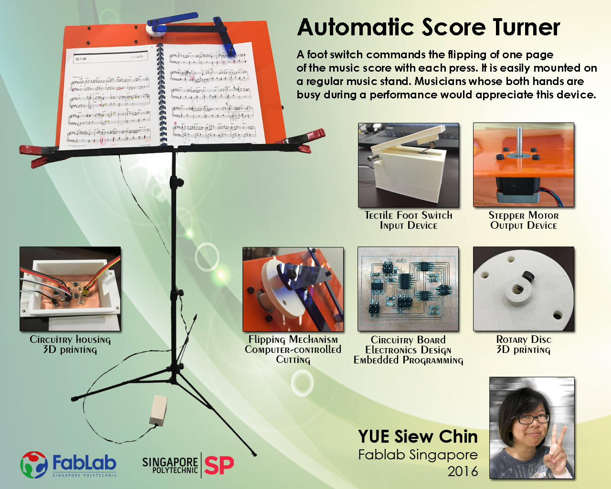
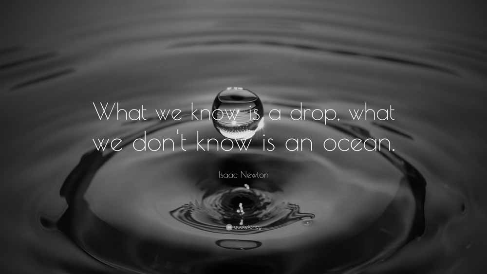

Project Proposal Project Planning Project Documentation Mechanical Design Electronics Design Final Project Presentation

Looking back over the past 6 months, I have much to be thankful for. It has been a wonderful learning journey for me. I never would have imagined that I could be building circuit boards, soldering, designing and making 3D models, or building something of such complexity. This course has stretched my capabilities beyond what I could ever imagine about myself. I gain confidence with little steps I took and celebrate little progress I made. I am frequently reminded (as it is my wallpaper) by this quotation by Isaac Newton, that "What we know is a drop, what we don't know is an ocean". There is still an ocean of things we do not know, but having a curious mind and a hunger to learn and discover will take us somewhere in our journey for the quest of knowledge. "Never stop learning because life never stops teaching." I am glad I was able to complete this course and am excited to take on greater challenges after this, in the arena of innovative fabrication and to impart my knowledge to others.
